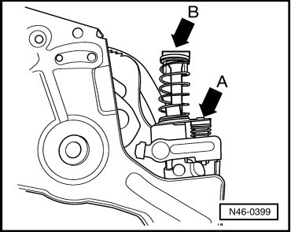
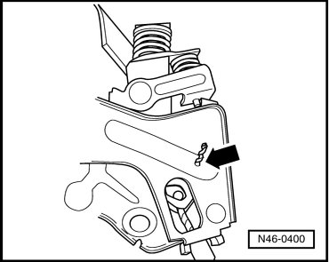
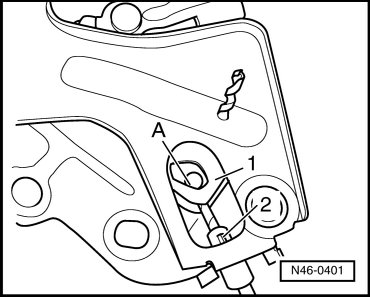

Park Brake Pedal
Park Brake Pedal
Removing
- Remove driver side trim.
- Disconnect connector from contact switch for parking brake.
- Remove left fuse panel and lay aside as far as possible together with wiring harness.
- First press spring plate of release spring - arrow A - downward in order to compress the spring for cable compensation - arrow B -.

- Hold spring - arrow B - compressed.
- Secure compressed spring by e.g. sliding a drill bit through holes of the park brake pedal - arrow - and through the linked cable mounting.

- Unhook brake cable - A - from cable mounting - 1 - of park brake pedal.

- Unclip cable sleeve - 2 - from mount.
- Remove both park brake pedal bolts.
- Remove park brake pedal from mount.
Installing
- Installation is performed in the reverse sequence.
- Remove transport protection device (drill bit) from park brake pedal.
There will be an automatic length compensation of the brake cable caused by the spring.
- Check free play at foot operated parking brake lever --> [ Park Brake Pedal, Checking
Play ] Procedures.